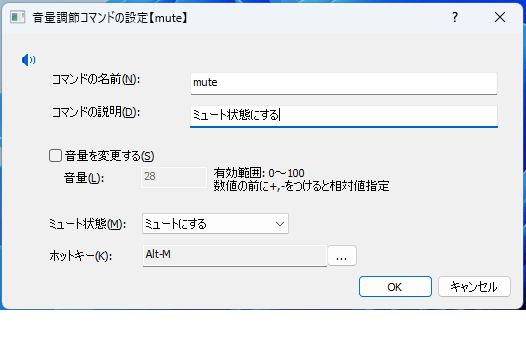

音量調節コマンド
サウンドデバイスの音量やミュート状態を変更するためのコマンド。
下記の操作が可能
音量を0～100の範囲で設定する(絶対値指定)
音量を増減させる(相対値指定)
ミュート状態を変更する
ミュートにする
ミュート解除する
トグルする
コマンド実行時点でシステムで選択されているサウンドデバイスに対して適用する。
(複数のサウンドデバイスがある状況で任意のデバイスに対して...という機能はない)
設定画面

コマンドの名前入力画面からコマンドを実行するためのキーワード
コマンドの説明コメント表示欄に記載される文字列。
音量を変更するチェックすると、
音量欄に指定した数値で音量を変更する
音量音量変更を行う場合の音量レベルを数値で指定する。
0～100の範囲で指定する。0は最小音量、100は最大音量数値の前に
+-を付与すると、現在の音量に対する増減指定となる。
ミュート状態
ミュートの状態を指定する。下記4つのいずれかを選択する。変更しないミュート解除するミュートにするトグル(反転)
ホットキーコマンドを呼び出すキーバインドを設定できる。設定したキーを押下するとコマンドを実行できるようになる。
実行時の動作
押下キー |
動作 |
|---|---|
|
設定した内容に基づき音量調節を実行する |